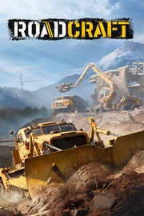

RoadCraft
Detalles
 |
|
| Tiempo de juego | No Jugado |
| Última actividad | Nunca |
| Añadido | 15/06/2025 21:11:50 |
| Modificado | 15/06/2025 21:14:04 |
| Estado de finalización | Not Played |
| Librería | Playnite |
| Fuente | 6TB STORE |
| Plataforma | PC (Windows) |
| Fecha de lanzamiento | 20/05/2025 |
| Puntuación de la Comunidad | 74 |
| Puntuación de la Crítica | |
| Puntuación de usuario | |
| Género | Aventura Simuladores |
| Desarrollador | Saber Interactive |
| Editor | Focus Entertainment |
| Característica | Cloud Saves Compat. Total Con Mando Cooperativo Cooperativo En Línea Cromos De Logros De Multijugador Multijugador Multiplataforma Préstamo Familiar Un Jugador |
| Enlaces | Punto de encuentro Discusiones Guías Noticias Página de la tienda PCGamingWiki Logros |
| Tag | 3D Automatización Aventura Conducción Construcción Construcción de bases Cooperativos Cooperativos en línea Destrucción Exploración Física Modernos Multijugador Naturaleza Para mando Realistas Simulación Simulador de automóviles Simulador inmersivo Transportes |
Descripción

 Diriges una empresa que restaura lugares devastados por desastres naturales. Utiliza tu maquinaria para reactivar la industria local; limpia escombros y equipos defectuosos, reconstruye carreteras y puentes dañados por el mal tiempo, ¡y mucho más!
Diriges una empresa que restaura lugares devastados por desastres naturales. Utiliza tu maquinaria para reactivar la industria local; limpia escombros y equipos defectuosos, reconstruye carreteras y puentes dañados por el mal tiempo, ¡y mucho más!

 Diriges una empresa de recuperación de catástrofes, especializada en restaurar lugares devastados por catástrofes naturales. Te aguardan numerosas tareas para reactivar la industria local con la ayuda de tu maquinaria pesada: limpiar escombros, sustituir equipos defectuosos o reconstruir carreteras y puentes dañados por el mal tiempo. Despliega convoyes de recursos para producir nuevos materiales de reconstrucción, ¡y mucho más!
Diriges una empresa de recuperación de catástrofes, especializada en restaurar lugares devastados por catástrofes naturales. Te aguardan numerosas tareas para reactivar la industria local con la ayuda de tu maquinaria pesada: limpiar escombros, sustituir equipos defectuosos o reconstruir carreteras y puentes dañados por el mal tiempo. Despliega convoyes de recursos para producir nuevos materiales de reconstrucción, ¡y mucho más!

 Experimenta una simulación de nueva generación con el nuevo motor desarrollado por Saber Interactive, los creadores de MudRunner y SnowRunner. Cada objeto tiene una física realista, que tiene en cuenta su masa y tamaño. Interactúa con elementos como arena, madera y asfalto. Remodela el terreno y facilita el movimiento de tus vehículos con las carreteras recién construidas.
Experimenta una simulación de nueva generación con el nuevo motor desarrollado por Saber Interactive, los creadores de MudRunner y SnowRunner. Cada objeto tiene una física realista, que tiene en cuenta su masa y tamaño. Interactúa con elementos como arena, madera y asfalto. Remodela el terreno y facilita el movimiento de tus vehículos con las carreteras recién construidas.

 Cada máquina tiene su propio comportamiento. Utiliza tu buldócer para quitar obstáculos, tu transportador pesado para llevar varios vehículos a la vez, o tus grúas fijas o puentes-grúa para levantar contenedores y equipos. Reconecta una fábrica a la red eléctrica con tu cableadora, pon asfalto caliente con tu pavimentadora y aplánalo con el vehículo de rodillo para crear tus propias carreteras. Desbloquea más de 40 vehículos a medida que avanzas en la campaña narrativa. Visita tu taller para personalizar tus máquinas con el logotipo de la empresa y volver a pintarlas con tus colores personalizados.
Cada máquina tiene su propio comportamiento. Utiliza tu buldócer para quitar obstáculos, tu transportador pesado para llevar varios vehículos a la vez, o tus grúas fijas o puentes-grúa para levantar contenedores y equipos. Reconecta una fábrica a la red eléctrica con tu cableadora, pon asfalto caliente con tu pavimentadora y aplánalo con el vehículo de rodillo para crear tus propias carreteras. Desbloquea más de 40 vehículos a medida que avanzas en la campaña narrativa. Visita tu taller para personalizar tus máquinas con el logotipo de la empresa y volver a pintarlas con tus colores personalizados.

 Las catástrofes han sembrado el caos, cortando el acceso a muchas zonas afectadas. Tú eres la última esperanza para hacer frente a estas condiciones extremas. Ya sea en las montañas, en el corazón del desierto o junto al mar, ¡tu pericia es necesaria en todo el mundo! Explora 8 mapas exclusivos, cada uno de 4 km², con sus propios biomas y edificios. Elige tu itinerario a través de fábricas abandonadas, presas sumergidas o campos solares fuera de servicio. Busca en cada rincón para alcanzar tus objetivos y consigue nuevos contratos para ganar financiación y puntos de experiencia adicionales.
Las catástrofes han sembrado el caos, cortando el acceso a muchas zonas afectadas. Tú eres la última esperanza para hacer frente a estas condiciones extremas. Ya sea en las montañas, en el corazón del desierto o junto al mar, ¡tu pericia es necesaria en todo el mundo! Explora 8 mapas exclusivos, cada uno de 4 km², con sus propios biomas y edificios. Elige tu itinerario a través de fábricas abandonadas, presas sumergidas o campos solares fuera de servicio. Busca en cada rincón para alcanzar tus objetivos y consigue nuevos contratos para ganar financiación y puntos de experiencia adicionales.

 Recoge restos de madera, acero y cemento y transfórmalos en componentes en tus plantas de reciclaje, ¡cualquier trozo de escombro puede servir para la reconstrucción! Abastece fábricas y canteras de arena para producir recursos en masa. Como director de operaciones, traza las rutas en el mapa para tus camiones de transporte y asegúrate de que ningún obstáculo les bloquea el camino.
Recoge restos de madera, acero y cemento y transfórmalos en componentes en tus plantas de reciclaje, ¡cualquier trozo de escombro puede servir para la reconstrucción! Abastece fábricas y canteras de arena para producir recursos en masa. Como director de operaciones, traza las rutas en el mapa para tus camiones de transporte y asegúrate de que ningún obstáculo les bloquea el camino.

 El mundo de RoadCraft ofrece muchas actividades. ¿Por qué no completarlas con tus amigos? Organiza una sesión cooperativa de hasta 4 jugadores. Repartíos las tareas o concentraos juntos en un único objetivo. Combinad vuestras fuerzas e ingenio para encontrar soluciones, incluso las más inesperadas.
El mundo de RoadCraft ofrece muchas actividades. ¿Por qué no completarlas con tus amigos? Organiza una sesión cooperativa de hasta 4 jugadores. Repartíos las tareas o concentraos juntos en un único objetivo. Combinad vuestras fuerzas e ingenio para encontrar soluciones, incluso las más inesperadas.